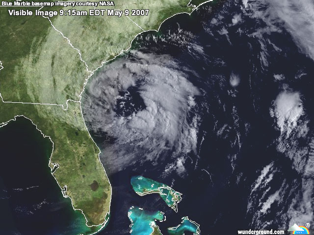
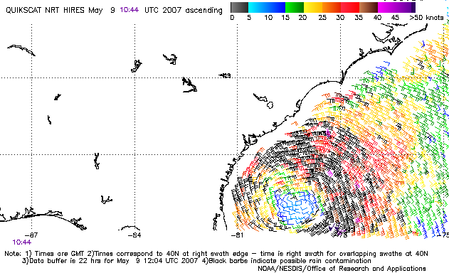

It is often difficult to tell from looking at forecast model data whether a low that is expected to develop near the U.S. coast will be tropical, subtropical, or extratropical. The difference is important, since tropical systems have the potential to quickly grow into hurricanes, while extratropical or subtropical storms do not. So, here's a quick meteorology lesson on the normal progression one sees from extratropical cyclone, to subtropical cyclone, to tropical cyclone. 1) An extratropical cyclone forms. Extratropical cyclones have cold air at their core, and derive their energy from the release of potential energy when cold and warm air masses interact. These storms always have one or more fronts connected to them, and can occur over land or ocean. An extratropical cyclone can have winds as weak as a tropical depression, or as strong as a hurricane. Examples of extratropical cyclones include blizzards, Nor'easters, and the ordinary low pressure systems that give the continents at mid-latitudes much of their precipitation. 2) If the waters under the extratropical cyclone are at least 21C (70F), thunderstorm activity will gradually build inside the storm and moisten and warm the lower levels. Over time, the core of the storm may gradually go from cold to warm, and the storm will start getting some of its energy from "latent heat", which is the energy released when water vapor that has evaporated from warm ocean waters condenses into liquid water. Latent heat is what powers tropical cyclones. At this point, the storm is called subtropical. If the winds are already more than 39 mph (as happened in the case 2007's Subtropical Storm Andrea), it is called a subtropical storm. If the winds are less than 39 mph, then it is called a subtropical depression. So, you don't need to start with a subtropical depression in order to get a subtropical storm. A subtropical storm typically has a large, cloud free center of circulation, with very heavy thunderstorm activity in a band removed at least 100 miles from the center. The difference between a subtropical storm and a tropical storm is not that important as far as the winds they can generate, but tropical storms generate more rain. There is no such thing as a subtropical hurricane. If a subtropical storm intensifies enough to have hurricane force winds, than it must have become fully tropical. The definition of a subtropical storm, according to the National Hurricane Center: A non-frontal low pressure system that has characteristics of both tropical and extratropical cyclones. The most common type is an upper-level cold low with circulation extending to the surface layer and maximum sustained winds generally occurring at a radius of about 100 miles or more from the center. In comparison to tropical cyclones, such systems have a relatively broad zone of maximum winds that is located farther from the center, and typically have a less symmetric wind field and distribution of convection. A second type of subtropical cyclone is a mesoscale low originating in or near a frontolyzing zone of horizontal wind shear, with radius of maximum sustained winds generally less than 30 miles. The entire circulation may initially have a diameter of less than 100 miles. These generally short-lived systems may be either cold core or warm core.
 Figure 1. Visible satellite image of Subtropical Storm Andrea shortly before it was named on May 9, 2007. Note that there is very little heavy thunderstorm activity near the center. The heavy thunderstorm activity is several hundred miles away from the center of circulation, which is typical of subtropical storms.

Figure 2. QuikSCAT image of the surface winds at 6:44am EDT
Wed May 9 around Subtropical Storm Andrea. Again, note that the
strongest winds are several hundred miles away from the center of
circulation, which is typical of subtropical storms. Image credit: NOAA/NESDIS. 3) If the subtropical storm remains over warm water for several days, it may eventually become fully tropical, and be called a tropical storm. This happens when thunderstorm activity starts building close to the center of circulation, and the strongest winds and rain are no longer in a band far from the center. The core of the storm becomes warm, and the cyclone derives all of its energy from the "latent heat" released when water vapor that has evaporated from warm ocean waters condenses into liquid water. One does not find warm fronts or cold fronts associated with a tropical cyclone. Note that tropical storms regularly become extratropical storms when they get close enough to the pole to get caught up in a front.
The normal progression to get a tropical storm 2) The tropical disturbance acquires a spin, and winds of at least 30 mph. It is now called a tropical depression. 3) Winds in the depression increase to at least 39 mph. It is now called a tropical storm.
The history of subtropical storms in the Atlantic The official "HURDAT" database, which goes back to 1851, has 23 storms that could be characterized as "completely" subtropical: 18 storms called "SUBTROP", and five named storms (most recently, Subtropical Storm Andrea of 2007). There were 51 storms that could be characterized as subtropical during some period of their lifespan: 7 of the 22 NOT NAMED storms, plus 44 other named storms. Of the 51 sometime-subtropical storms, the majority started out as subtropical and transitioned to tropical (5 of the NOT NAMED storms, and 33 of the named storms). The actual number that were subtropical at some portion of their lives is much higher. I've seen one estimate that 12% of all Atlantic named storms were subtropical at some portion of their existence. One started as extratropical and transitioned to subtropical (Nicole 2004). Seven started as extratropical and transitioned to subtropical, and then to tropical: Two NOT NAMED storms (17 of 1969, and 08 of 1991), and five named storms (Karen 2001, Olga 2001, Ana 2003, Otto 2004, Delta 2005). Five named storms started as tropical and transitioned to subtropical (and Georges, 1980, then transitioned back to tropical). The distribution of these storms by decade and type is as follows:
Decade Subtropical For a time Total --------- ----------- ----------- ----- 1968-1969 2 4 6 1970-1979 13 9 22 1980-1989 3 17 20 1990-1999 2 6 8 2000-2007 3 16 19
Thanks to Margie Kieper for providing this table.
|